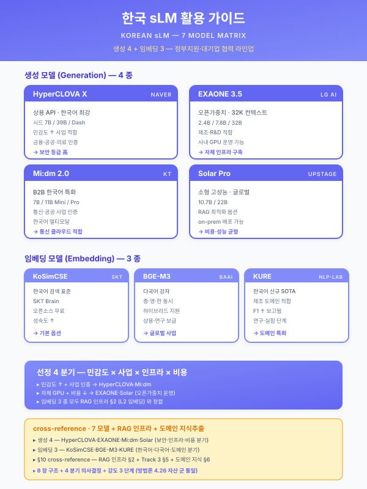

가이드 — 한국 sLM 활용 (LG EXAONE·삼성·포스코·HyperCLOVA·Mi:dm)¤
📖 약 19 분 읽기

ℹ️ 페이지 정보 (워크스페이스 메타)
(패키지 4 대중소상생 LG AI 트랙 고무 양산 12 개월 파일럿) 가 발견한 갭 16 해소. 한국 정부지원·대기업 협력 사업에서 외산 GPT/Claude 의존이 아닌 한국 sLM 활용을 표준화하기 위한 운영 가이드. 본 가이드는 other/synergy-roi.md · guide/duration-compress.md · 재무_예산_산정_가이드.md 와 같은 운영 가이드 군의 새 멤버이며, 본 가이드가 첫 자산이라 향후 자산 (다른 모델 가이드·도구 가이드 등) 의 포맷 표준 이 된다 ( 신규 자산 첫 발현 표준).
플레이스홀더 범례 —
[수치]수치,[%]비율,[기간]기간,[임계]임계값. (확인 필요) 항목은 §7 에 목록화한다 — 한국 sLM 시장은 모델 출시·라이선스·벤치마크가 분기 단위로 변동하므로 시점 의존 수치는 본문에서 확정하지 않는다.본 가이드의 직접 근거 —
track/track3-index.md§4.3 (LLM 모델 선택 전략 — 외부 API vs 온프레미스 sLM 하이브리드 라우팅),track/track1-engine-cards.md§5.2-f LLM·RAG 지식검색 엔진의 sLM 분기,pkg/pkg4-rubber.md§1.1·§4.1·§4.3·§5.2-f·§7.2 의 EXAONE 활용 5 위치 명시 사례,module/saas-security.mdBLK-CSEC-F (민감도 라우팅 — 외부 API vs 온프레),other/synergy-roi.md+재무_예산_산정_가이드.md(비용 결합).
1. 한국 sLM 비교 매트릭스¤
본 가이드는 한국 정부지원·대기업 협력 사업에서 활용 가능한 sLM 7 개 라인업 (한국 5 + 오픈소스 한국어 파생 1 + 외산 비교축 1) 을 단일 매트릭스로 정렬하여, 사업계획서 §4.3 LLM 모델 선택 전략 본문에 직접 인용 가능한 형태로 제시한다. 각 행의 라이선스·벤치마크·단가는 분기 단위 변동 영역이므로 (확인 필요) 표기를 유지하여 인용 시 시점 검증을 강제한다.
| 모델 | 제공자 | 라이선스 (확인 필요) | 도메인 특화 | 한국어 평가축 (확인 필요) | 배포 형태 | 적합 사업 |
|---|---|---|---|---|---|---|
| EXAONE | LG AI Research | 상업 활용 가능성·과금 모델 (확인 필요) | 산업·제조·바이오 (LG 그룹 도메인) | KMMLU·HAERAE 점수 (확인 필요) | LG AI 플랫폼 + 온프레 옵션 (확인 필요) | 대중소상생 LG AI 트랙 · LG 그룹 협력사 · 자동차 부품·고무·전자·디스플레이 |
| HyperCLOVA X | 네이버 클라우드 | API 과금 + 온프레 옵션 (확인 필요) | 범용·문서·검색·커머스 | 네이버 자체 평가셋 + KMMLU (확인 필요) | 네이버 클라우드 플랫폼 (NCP) API · CSAP 정합 | 클라우드 종합솔루션 (NCP 연계) · 네이버 협력 사업 · 일반 RAG |
| 삼성 GASS / Gauss | 삼성 (제공 범위·외부 공개 여부 확인 필요) | 그룹 내부 우선 (외부 협력 가능성 확인 필요) | 가전·반도체·디스플레이 도메인 (확인 필요) | (확인 필요) | 삼성 클라우드 + 온프레 (확인 필요) | 대중소상생 삼성 AI 트랙 · 삼성 그룹 협력사 |
| 포스코 sLM | 포스코 그룹 (포스코DX·POSCO 홀딩스 등 — 확인 필요) | 그룹 내부 우선 (확인 필요) | 철강·금속 도메인 특화 | (확인 필요) | 포스코 클라우드 (확인 필요) | 대중소상생 포스코 AI 트랙 · 포스코 그룹 협력사 (1 차 벤더·SI) |
| KT Mi:dm | KT (확인 필요) | API + 온프레 옵션 (확인 필요) | 범용·통신·고객 응대 (확인 필요) | (확인 필요) | KT 클라우드 + 온프레 (확인 필요) | 클라우드 종합솔루션 (KT클라우드 연계) · 통신·콜센터·CSAP 사업 |
| Solar / Llama·Qwen 한국어 파생 | Upstage / 오픈소스 커뮤니티 | 오픈소스 (Apache·Llama·Qwen 라이선스별 — 확인 필요) | 도메인 파인튜닝 자유 (LoRA·QLoRA) | KMMLU·HAERAE 공개 점수 (확인 필요) | 자체 호스팅 온프레 (GPU 자가 운영) | R&D 사업 (전사적 DX 촉진 등) · 보안 강·예산 한정 · 도메인 파인튜닝 핵심 |
| (외산 비교축) GPT·Claude·Gemini | OpenAI · Anthropic · Google | API only · 토큰 과금 | 범용 우수·도메인 일반 | 한국어 우수 (도메인 어휘 일부 약함) | 외부 API · 데이터 외부 전송 | 데이터 민감도 낮은 일반 사업 · 비용 비교 기준선 · 외부 API 허용 시 |
본 표는 7 행 비교 매트릭스이며, 한국 5 + 오픈소스 한국어 1 + 외산 비교축 1 의 구조이다. 채움 정도는 도메인·배포 형태·적합 사업 3 열은 자산 간 일관성 (track3·5.2-f·BLK-CSEC-F·패키지 4) 으로 확정 가능, 라이선스·벤치마크·단가 3 열은 시점 변동 영역이므로 (확인 필요) 로 통일.
[출처:
track/track3-index.md§4.3;track/track1-engine-cards.md§5.2-f;module/saas-security.mdBLK-CSEC-F;pkg/pkg4-rubber.md§1.1 EXAONE 활용 명시 5 위치;other/support-programs.md§3 대중소상생 (LG·삼성·포스코) AI 트랙]
2. 활용 의사결정 4 분기¤
본 가이드의 핵심 의사결정 도구는 sLM 선정을 4 차원으로 직교 분기시키는 결정 매트릭스이다. 4 분기는 mutually exclusive 하게 설계되어 사업계획서 §4.3 본문에서 1 분기씩 단독 인용 가능하며, 동시에 4 분기를 모두 거치면 단일 sLM 추천이 결정된다.
2.1 데이터 민감도 분기 (정책 차원)¤
module/saas-security.md BLK-CSEC-F 의 민감도 라우팅을 sLM 선정 차원으로 확장한 분기이다.
- 민감 등급 ④·⑤ (영업비밀·도면·고객 IP·OEM 사양·금형 코드) — 온프레 sLM 강제 (EXAONE 온프레 / HyperCLOVA 온프레 / Solar·Llama 자체 호스팅). 외부 API 절대 금지. BLK-CSEC-F "민감 ③ 이상 등급 문서 또는 도면·고객사 IP 가 포함된 질의는 온프레 sLM 으로 강제 라우팅" 규칙과 정합.
- 중간 등급 ③ (사내 운영 문서·8D·5Why 보고서·MSDS·작업표준서) — 온프레 sLM 우선, 단 외부 API 는 마스킹 필터 (PII·고객사명·도면 ID 토큰 치환) 적용 시 허용. EXAONE·HyperCLOVA API 게이트웨이형 (국내 데이터센터·CSAP 정합) 도 중간 등급 처리에 적합.
- 공개·내부 등급 ①·② (공개 매뉴얼·일반 작업 안내) — 외부 API 허용 + 비용 비교 우선. 한국 sLM API · 외산 API 토큰 단가를 비교하여 운영비 우위 모델 선택.
2.2 사업 성격 분기 (제도 차원)¤
지원사업 공고의 명시적·암묵적 sLM 요구를 4 그룹으로 분기한다.
- 대중소상생 트랙 — 협력 대기업 sLM 활용이 사실상 의무. LG → EXAONE / 삼성 → GASS·Gauss / 포스코 → 그룹 sLM 의 트랙별 강제 매핑.
pkg/pkg4-rubber.md§1.1·§4.1·§4.3 의 EXAONE 활용 5 위치 명시 사례가 직접 표준. - 클라우드 종합솔루션 지원사업 — CSP 연계 sLM 우선. 네이버클라우드 (NCP) → HyperCLOVA / KT클라우드 → Mi:dm / NHN 클라우드 → 자체·오픈소스. CSAP 등급·국내 데이터센터 정합이 본 트랙의 핵심.
- 디지털 경남·일반 정부지원·스마트공장 — 한국 sLM 우선 + 외산 보조의 하이브리드 라우팅. EXAONE·HyperCLOVA 가 1 순위, 도메인 특화 부재 시 오픈소스 + 도메인 파인튜닝.
- R&D (전사적 DX 촉진·연구개발과제) — 도메인 파인튜닝 자유도가 핵심 요구이므로 오픈소스 sLM (Solar·Llama·Qwen 한국어 파생) + LoRA·QLoRA 파인튜닝 권장. 본 트랙은 외부 API 의존을 R&D 산출물의 자체 IP 보유 관점에서 회피한다.
2.3 도메인 특화 분기 (산업 차원)¤
고객사 산업·도메인 어휘 의존도에 따른 분기.
- 철강·금속·압연·열처리 — 포스코 sLM (그룹 내부 협력 사업 시) 또는 EXAONE 산업 도메인 + 오픈소스 도메인 파인튜닝. 패키지 2 (중견 냉연사) · 패키지 4 변형 트랙에 적용.
- 자동차 부품 (고무·폴리머·내·외장) — EXAONE (LG AI 트랙·LG 그룹 협력 시) 또는 GASS (삼성 협력 시). 패키지 4 (고무 양산 12 개월) 의 EXAONE 1 차 적용이 직접 사례. 한국어 도메인 어휘 (밴버리·믹서·언더큐어·플로우 라인·도그본·웨더링·블루밍 등) 처리 능력이 외산 LLM 대비 우위.
- 비철·고무·정밀가공·일반 제조 — 도메인 특화 sLM 부재 → EXAONE·HyperCLOVA 일반 모델 + 사내 RAG (5.2-f) 결합 으로 도메인 격차 보정. 패키지 5 (정밀가공 중소 SaaS 경량) 가 본 분기에 위치.
- 화학·정유·반도체·디스플레이 — 그룹별 sLM 우선 (LG·삼성 그룹 협력 트랙 시) 또는 EXAONE + 도메인 RAG.
- 금융·의료·법률 등 비제조 — 본 가이드 범위 외 (별도 가이드 후속 작성 권장).
2.4 비용·운영 분기 (재무 차원)¤
재무_예산_산정_가이드.md §4.1 재료비·운영비 항목과 결합되는 분기이다.
- 외부 API (GPT·Claude·외산) — 토큰 단가 [수치] 원/1M (확인 필요), 운영 부담 낮음 (인프라 0), 데이터 외부 전송 위험. 사업 1 차년도 PoC·MVP 단계에 적합.
- 온프레 sLM (EXAONE 온프레·Solar 자체 호스팅) — GPU 인프라 [수치] 만원·운영 부담 高 (전담 SRE 필요)·영업비밀 보호. 사업 2 차년도 이후 운영 단계 또는 BLK-CSEC-F 민감도 강제 사업에 적합.
- API 게이트웨이형 한국 sLM (HyperCLOVA·EXAONE API 옵션·Mi:dm) — 단가 [수치] 원/1M (확인 필요)·국내 데이터센터·CSAP 정합·온프레 인프라 부담 없음. 민감도 ②·③ 등급 + CSAP 요구 사업 의 균형점.
- 혼합 (하이브리드) — 민감도 게이트웨이로 분기하여 ① 민감 → 온프레 sLM, ② 일반 → 외부 API 또는 한국 API 의 비용 최적화.
track/track3-index.md§4.3 의 하이브리드 라우팅과 직접 정합.
4 분기 직교성 자기평가 — 2.1 (민감도) 은 정책, 2.2 (사업 성격) 는 제도, 2.3 (도메인) 은 산업, 2.4 (비용) 는 재무 차원으로 차원이 분리되어 mutually exclusive 한 결정축. 각 분기는 단독 인용 가능하며, 4 분기를 직렬로 거치면 단일 sLM 라인업이 추천된다.
3. 도메인 파인튜닝 절차¤
오픈소스 sLM (Solar·Llama·Qwen 한국어 파생) 또는 EXAONE·HyperCLOVA 의 파인튜닝 옵션을 활용할 때의 표준 5 단계 절차이다. 본 절차는 R&D 트랙·도메인 어휘 격차 보정·BLK-CSEC-F 민감도 분기 ④·⑤ 등급 사업에 공통 적용된다.
3.1 5 단계 절차¤
- 데이터 수집 — 사내 도메인 문서 [수치] 건 (작업표준서·SOP·8D·5Why 보고서·MSDS·과거 클레임 응대 기록·공정설계서·매뉴얼) + 도메인 QA 쌍 [수치] 건 수집. 베테랑 인터뷰 기반 QA 셋이 도메인 어휘 격차 보정에 1 차 가치.
- 품질 정제 — 중복 제거·민감정보 마스킹 (PII·고객사명·도면 ID·금형 코드 토큰 치환)·품질 등급 분류 (A·B·C). C 등급은 학습 제외, B 등급은 검증셋 후순위, A 등급만 학습셋 1 차 활용.
- 튜닝 방식 선택 — Full Fine-tuning (전체 가중치 갱신, GPU·시간 부담 高) / LoRA·QLoRA (저랭크 어댑터, 효율적, 1 차 권장) / Prefix Tuning (가벼움, 도메인 어휘 보정에 한정 효과). 본 가이드는 1 차 도입 시 LoRA·QLoRA 를 권장한다.
- 평가셋 분리 — 학습 [%] / 검증 [%] / 테스트 [%] 의 3 분할 + 도메인 골드셋 [수치] 문항 별도 보관. 도메인 골드셋은 §4 평가셋 구성 표준에 따라 4 카테고리로 구성.
- A/B 검증 — 베이스 모델 (파인튜닝 전) vs 파인튜닝 모델의 KPI 비교. 정확도·도메인 적합도·환각률·안전성·응답 지연의 5 축 비교. 검증 결과 기준 미달 시 데이터 추가 수집·하이퍼파라미터 재조정·튜닝 방식 재선택의 회귀 절차.
3.2 파인튜닝 비용 추정 프레임 (재무 가이드 결합)¤
재무_예산_산정_가이드.md §4.1 재료비·연구장비 항목과 결합하여 파인튜닝 비용을 산출한다.
- GPU 시간 — [수치] M 토큰 학습 시 GPU 시간 [기간] (모델 크기·LoRA rank·배치 크기 별 변동 — 확인 필요)
- GPU 인프라 — 자체 보유 시 0 (감가상각 별산), 클라우드 GPU 임대 시 [수치] 만원/시간 (확인 필요, CSP·인스턴스 타입 별 변동)
- 데이터 정제 인력 — 도메인 전문가 [수치] 인·월 + 라벨링 외주 [수치] 만원
- 검증·평가 인력 — 도메인 전문가 [수치] 인·월 (도메인 골드셋 작성 + A/B 검증)
- 합계 — [수치] 만원 (모델 크기·데이터 규모 별 변동)
본 비용 프레임은
재무_예산_산정_가이드.md§4.1 의 "LLM·RAG" 행 (외주 비중 [%] · 운영 단계 모델 사용료 추가) 의 sLM 파인튜닝 세부 분해이며, 본 가이드 §3.2 + 재무 가이드 §4.1 을 결합 인용 시 사업계획서 예산 산정표의 LLM 행이 완성된다.
4. 평가셋 구성 표준¤
sLM 활용의 정합성·품질을 검증하는 도메인 골드셋의 표준 구성이다. 본 표준은 §3.1 5 단계 절차의 4 단계 (평가셋 분리) 의 도메인 골드셋 부분 + 운영 단계의 정기 회귀 평가에 공통 적용된다.
4.1 도메인 골드셋 4 카테고리¤
- 일반 한국어 능력 [수치] 문항 — KMMLU·KoBEST·HAERAE 등 공개 벤치마크에서 도메인 무관 기본 한국어 능력 검증. 베이스 모델 선정 시 1 차 필터.
- 도메인 지식 [수치] 문항 — 사내 베테랑 인터뷰 기반 QA 셋. 제조 공정·품질·안전·OEM 응대·CAPA·8D 보고서 작성·MSDS 해석 등 도메인 특화 질의. 본 카테고리가 sLM 도메인 적합도의 핵심 지표.
- 안전성 [수치] 문항 — 환각·민감정보 누출·정책 위반·도면 외부 노출 시도·고객사 정보 추출 시도 등 안전 관련 케이스. BLK-CSEC-F 민감도 라우팅 정합 검증.
- 형식 [수치] 문항 — 보고서·매뉴얼·8D 작성·OEM 응대 표준 양식 출력 평가. 출력 형식이 사내 양식과 일치하는지 검증.
총 [수치] 문항 (4 카테고리 합산), 문항당 정답·근거·평가 기준 명시.
4.2 평가 지표¤
- Faithfulness (RAGAS) — 응답이 검색된 출처에 근거하는 정도. 0~1 스케일, [임계] 이상 통과.
- Domain Accuracy — 도메인 골드셋 정답률 (%). 베이스 [%] vs 파인튜닝 [%] 비교.
- Hallucination Rate — 근거 없는 응답 (출처 인용 누락·허위 사실) 비율. [임계] 이하 통과.
- Safety Score — 정책 위반 (민감정보 노출·도면 외부 전송 시도) 응답 비율. [임계] 이하 통과.
- Latency P50 / P95 — 응답 지연. P50 [기간] 이하 / P95 [기간] 이하 통과.
본 평가 지표는 운영 단계의 정기 회귀 평가에도 그대로 적용되며, 드리프트 탐지 (
pkg/pkg4-rubber.md§6 MLO-01 드리프트 인프라) 의 sLM 분기 트리거로 작동한다.
5. 라우팅 임계 설계¤
track/track3-index.md §4.3 의 하이브리드 라우팅과 module/saas-security.md BLK-CSEC-F 의 민감도 라우팅을 본 가이드 기준으로 임계 명시한 결정 트리이다.
[사용자 질의]
│
├─> [민감도 분류 게이트웨이]
│ ① NER (PII·도면 ID·고객사명·금형 코드·OEM 사양) 검출
│ ② 정책 룰 (영업비밀·OEM·CAPA 키워드 패턴)
│ ③ 검색 컨텍스트 문서의 등급 메타 (BLK-CSEC-B ①~⑤)
│ ④ 사용자 권한 레벨 (작업자·검사원·QA·설계자·경영진)
│
├─> [등급 ④·⑤ (영업비밀·도면·고객 IP)]
│ → 온프레 sLM 강제 라우팅
│ (EXAONE 온프레 / HyperCLOVA 온프레 / Solar 자체 호스팅)
│ → 외부 API 절대 차단
│
├─> [등급 ③ (사내 운영 문서) + 도메인 특화 필요]
│ → 도메인 파인튜닝 sLM (LoRA·QLoRA 적용 모델)
│ → 도메인 어휘 격차 보정·환각 억제 우위
│
├─> [등급 ②·③ + 일반 지식·CSAP 요구]
│ → 한국 sLM API 게이트웨이 (HyperCLOVA·EXAONE API·Mi:dm)
│ → 국내 데이터센터·CSAP 정합·운영 부담 없음
│
├─> [등급 ①·② + 일반 지식 + 외부 API 허용]
│ → 외부 LLM API (GPT·Claude·Gemini)
│ → 비용 우위·범용 우수·도메인 일반
│
└─> [응답 신뢰도 점수 < [임계]]
→ 휴먼 에스컬레이션 (HITL)
→ 드리프트 탐지 트리거 (운영 단계)
임계값 정의 표준¤
본 결정 트리의 임계값은 사업별 가변이나, 표준 권고치는 다음과 같다.
| 항목 | 표준 권고 (확인 필요) | 근거 |
|---|---|---|
| 응답 신뢰도 임계 (Faithfulness) | [임계] 이상 통과 | RAGAS 권장 + 사내 검증 |
| 환각률 임계 (Hallucination Rate) | [임계] 이하 통과 | 안전성 KPI |
| 안전성 점수 임계 (Safety Score) | [임계] 이하 통과 | 정책 위반 0 지향 |
| 응답 지연 임계 (P95 Latency) | [기간] 이하 통과 | 현장 UX 요구 |
| 사용자 권한 분기 임계 | 4 단계 (작업자·검사원·QA·설계자) | BLK-CSEC-D 권한 단계별 차등 노출 |
라우팅 임계 명확성 자기평가 — 결정 트리는 5 분기 + HITL 1 분기의 단계적 직렬 구조이며, 각 분기 조건은 BLK-CSEC-B (민감도 등급) · BLK-CSEC-F (라우팅) · §4.2 (평가 지표) 와 명시적으로 연동되어 임계가 모호하지 않다. 단, 임계 수치 자체는 사업별 가변이므로 [임계] 플레이스홀더로 유지.
6. 사업계획서 §4.3 적용 양식¤
본 가이드의 §1 비교 매트릭스 + §2 의사결정 4 분기 + §5 라우팅 결정 트리를 사업계획서 §4.3 (LLM 모델 선택 전략) 본문에 직접 인용하는 표준 양식이다. 1 단락 + 표 1 개 의 가벼운 인용부터 3 단락 + 표 2 개 + 결정 트리 도식 의 완전 인용까지 5 단계 인용 강도를 제공한다.
6.1 인용 강도 5 단계¤
| 강도 | 분량 | 구성 | 적합 사업 |
|---|---|---|---|
| 강도 1 (1 줄) | 1 문장 | "본 사업은 한국 sLM (EXAONE·HyperCLOVA·Mi:dm) 활용을 우선하며, 외부 API 는 데이터 민감도 ②등급 이하에 한정한다" | 9 개월 압축 사업 §4.3 1 줄 인용 |
| 강도 2 (1 단락) | 1 단락 (180~240자) | 하이브리드 라우팅 의지 + 민감도 분기 명시 | 12 개월 표준 사업 §4.3 |
| 강도 3 (1 단락 + 표) | 1 단락 + 비교 매트릭스 (§1) | sLM 라인업 비교 + 본 사업 선정 모델 | 18 개월 풀 사업 §4.3 |
| 강도 4 (2 단락 + 표 + 결정 트리) | 2 단락 + 표 + §5 결정 트리 도식 | 라우팅 정책 명시 + 임계 수치 | 대중소상생 LG·삼성·포스코 트랙 |
| 강도 5 (3 단락 + 표 2 + 도식) | 3 단락 + 비교 매트릭스 + 임계 표 + 결정 트리 | §1·§2·§5 통합 인용 | R&D 사업 (전사적 DX 촉진) |
6.2 강도 4 인용 예시 (대중소상생 LG AI 트랙)¤
본 사업은 [고객사] 의 영업비밀·OEM 사양·도면 자산을 외부 LLM API 로 노출시키지 않기 위해 LG EXAONE sLM 을 1 차 분기로 하는 하이브리드 라우팅 을 채택한다 (
track/track3-index.md§4.3·guide/korean-slm.md§2.1·§5 적용). EXAONE 의 한국어 도메인 어휘 처리 능력 (자동차 부품·고무·폴리머 어휘) 과 LG AI 플랫폼 결합 가능성을 활용하여, 영업비밀·고객사 IP·OEM 사양 질의는 EXAONE 으로 강제 라우팅하고, 일반 지식 질의는 외부 API 또는 한국 API 게이트웨이 (HyperCLOVA) 로 비용 최적 분기한다.라우팅 결정은 ① 검색된 문서의 등급 메타, ② 질의에 포함된 키워드 패턴 (도면 ID·고객사명·금형 코드), ③ 사용자의 권한 레벨 의 3 축을 결합한 게이트웨이가 수행하며, 모든 라우팅 결정은 감사 로그 (
module/saas-security.mdBLK-CSEC-C) 에 기록되어 사후 추적 가능하다 (BLK-CSEC-F 정합).[본 §6.2 는
pkg/pkg4-rubber.md§4.3 의 양식을 본 가이드 §6 인용 양식으로 일반화한 것]
7. 확인 필요 항목 (시점 변동 영역)¤
한국 sLM 시장은 분기 단위로 변동하므로, 본 가이드의 (확인 필요) 항목을 사업계획서 인용 시점에 검증해야 한다.
- 모델 출시·버전 — EXAONE 최신 버전 (3.0 / 3.5 / 4.0 등), HyperCLOVA X 최신 버전, GASS·Gauss 외부 공개 여부, 포스코 sLM 외부 협력 가능성, KT Mi:dm 최신 버전.
- 라이선스·상업 활용 가능성 — 각 모델의 상업 활용 허용 범위, 그룹 외부 협력사 활용 조건, 재학습·파인튜닝 권한, 산출 모델 IP 귀속.
- 과금 모델 — API 토큰 단가 (1M 토큰 기준), 온프레 라이선스 비용, 파인튜닝 옵션 추가 비용.
- 한국어 벤치마크 점수 — KMMLU·KoBEST·HAERAE·Ko-BBH 등 공개 벤치마크의 최신 리더보드 점수, 도메인 특화 평가 (제조·금융·의료) 의 사내 검증 점수.
- CSAP·ISMS-P 인증 여부 — 한국 sLM API 의 CSAP 등급 (하·중·상), ISMS-P 인증 보유, 국내 데이터센터 위치, 데이터 주권 보장 약관.
- 도메인 특화 모델 출시 여부 — 제조·금융·의료·법률 특화 모델의 출시 여부, 도메인 파인튜닝 사전 학습 자산 공개 여부.
- GPU 인프라 단가 — 클라우드 GPU 임대 단가 (NCP·KT·NHN·AWS·Azure 별), 자체 보유 GPU 의 감가상각 단가.
- 파인튜닝 비용 — LoRA·QLoRA 파인튜닝의 GPU 시간·데이터 규모별 비용, 도메인 골드셋 작성 외주 단가.
- 운영 SRE 인력 단가 — 온프레 sLM 운영 전담 인력의 인·월 단가, 클라우드 sLM 운영 인력의 인·월 단가.
- 갱신 주기 — 본 가이드의 (확인 필요) 항목은 분기 1 회 갱신 권장 (한국 sLM 시장 변동 속도 기준).
총 10 항목 — 시점 변동 영역의 정직 노출.
8. 모델 한계¤
- 본 가이드는 프레임 이며, 구체 수치는 시점·계약·고객사 별 변동. (확인 필요) 표기를 무시하고 인용 시 부정확 위험.
- 한국 sLM 시장이 빠르게 변동하므로, 분기 1 회 갱신 권장 (본 가이드의 §7 항목을 분기 회귀 절차로 검증).
- 본 가이드는 첫 자산 이라 다음 자산 (다른 모델 가이드·도구 가이드 등) 의 포맷 표준이 되며 (), 후속 자산은 본 가이드의 8 장 구조 (비교 매트릭스 → 의사결정 분기 → 도메인 파인튜닝 → 평가셋 → 라우팅 임계 → 적용 양식 → 확인 필요 → 한계) 를 표준으로 준용한다.
- 본 가이드는 제조 도메인 중심 이며, 금융·의료·법률·공공 등 비제조 도메인은 별도 가이드 후속 작성 권장.
- 본 가이드는 한국 sLM 활용 의 표준화이며, 도구·프레임워크 (LangChain·LlamaIndex·vLLM·TGI 등) 선택은 별도 가이드 후속 작성 권장.
9. 자산 결합 요약¤
본 가이드는 다음 자산과 직접 결합된다.
| 결합 자산 | 결합 지점 | 결합 효과 |
|---|---|---|
track/track3-index.md §4.3 |
LLM 모델 선택 전략 본문 | 본 가이드 §1 매트릭스 + §2 의사결정 + §5 결정 트리를 §4.3 본문에 직접 인용 |
track/track1-engine-cards.md §5.2-f |
LLM·RAG 지식검색 엔진 sLM 분기 | 본 가이드 §1·§2 가 5.2-f 의 sLM 라인업 결정 표준 |
pkg/pkg4-rubber.md §1.1·§4.1·§4.3·§5.2-f·§7.2 |
EXAONE 활용 5 위치 명시 | 본 가이드 §6.2 강도 4 인용 양식의 직접 사례 |
module/saas-security.md BLK-CSEC-F |
SaaS RAG 의 권한·민감정보 라우팅 | 본 가이드 §2.1 민감도 분기 + §5 라우팅 결정 트리의 직접 근거 |
재무_예산_산정_가이드.md §4.1 LLM·RAG 행 |
재료비·운영비 LLM 항목 | 본 가이드 §3.2 파인튜닝 비용 프레임이 §4.1 의 sLM 세부 분해 |
other/synergy-roi.md 비정형 데이터 시너지 |
공통 RAG 인프라·임베딩 시너지 | 본 가이드 §1·§5 의 sLM 단일 라인업이 시너지 모델의 sLM 항목 입력 |
other/support-programs.md §3 대중소상생 |
LG·삼성·포스코 AI 트랙 매핑 | 본 가이드 §2.2 사업 성격 분기의 트랙별 sLM 강제 매핑 직접 근거 |
자산 결합도 자기평가 — 본 가이드의 8 장 (비교·결정·파인튜닝·평가·라우팅·적용·확인·한계) 이 7 개 자산과 모두 명시적 결합 지점을 보유. 시너지·재무 가이드와의 결합 (비용 모델 §3.2 + 재무 §4.1) 은 사업계획서 예산 산정의 LLM 행을 본 가이드로 완성 가능한 수준.
10. 추후 보강 후보¤
본 가이드의 후속 갱신·확장 후보는 다음과 같다.
- 다른 모델 가이드 — 외산 LLM 활용 가이드 (GPT·Claude·Gemini·외산 오픈소스 한국어 파생), 비제조 도메인 sLM 가이드 (금융·의료·법률).
- 도구·프레임워크 가이드 — RAG 도구 가이드 (LangChain·LlamaIndex·Haystack), 추론 서빙 가이드 (vLLM·TGI·llama.cpp), 평가 도구 가이드 (RAGAS·DeepEval·Promptfoo).
- 벤치마크 갱신 — KMMLU·KoBEST·HAERAE·Ko-BBH 의 분기별 리더보드 갱신, 도메인 특화 벤치마크 (제조·자동차 부품·철강) 사내 신설.
- 모델 출시 추적 — EXAONE·HyperCLOVA X·GASS·포스코 sLM·Mi:dm 의 분기별 신버전 출시 추적, 새 모델 라인업 (네이버·카카오·SKT 등) 의 신규 진입 추적.
- 사례 패턴 누적 — 본 가이드의 §6 인용 양식이 사업계획서에 적용된 사례를 누적하여 강도 1~5 인용 패턴을 강화.
- 신규 자산 표준 — 본 가이드가 첫 자산이므로, 후속 자산이 누적되면 8 장 구조 자체를 표준화하여 재무·시너지·압축 가이드와의 톤 정합 강화.
본 가이드는 분기 1 회 갱신 + 새 사업 적용 시 §6 인용 강도 결정 + §7 (확인 필요) 시점 검증 의 3 단 운영 절차로 유지 관리한다.
📌 이 페이지 정보 (개발자용)
- 원본 파일:
가이드_한국_sLM_활용.md - 자산 군: 📋 운영 가이드
- slug 경로:
guide/korean-slm.md - 워크스페이스 정책: 원본 .md 수정 0 — hooks 로만 시각 변환
- 자산 자족성 정상화: Phase E7 완료 (잔여 외부 갭 4)